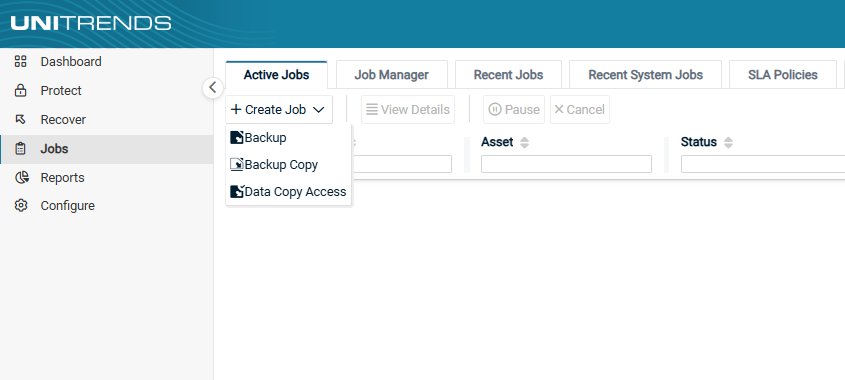
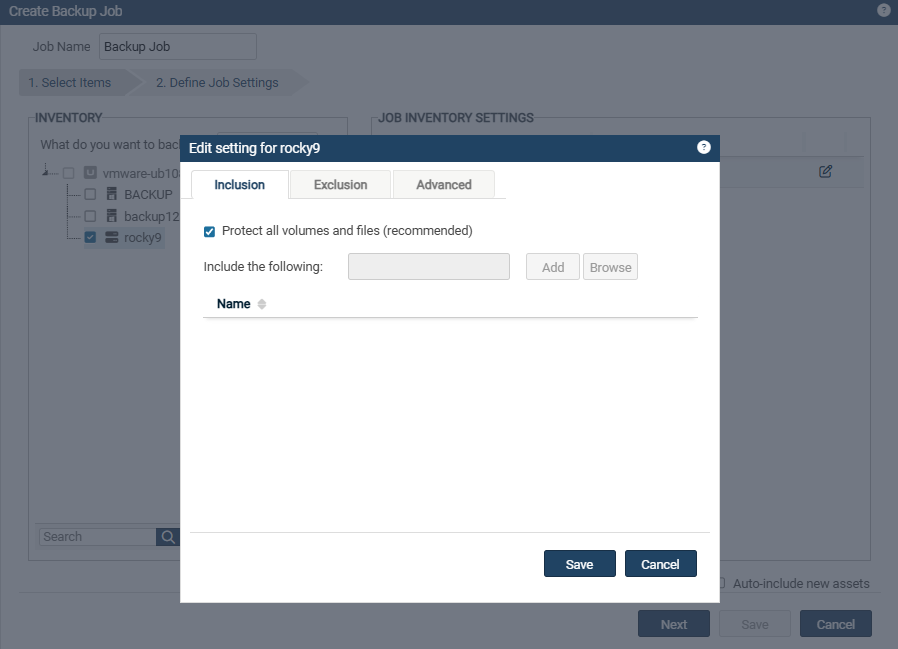

이미지 백업(Image-Level Backup)#
Windows 이미지 백업은 블록 가속화(block acceleration) 기술을 사용하여, 특히 수백만 개의 파일이 있는 Windows 서버에서 매우 빠른 백업 성능을 제공합니다.
Windows 대상이 디스크 및 볼륨 단위로 백업되기 때문에, 이미지 백업은 파일 백업보다 더 빠른 성능을 제공합니다. 이러한 백업 속도의 향상 덕분에,스냅샷을 더 자주 생성하여 장애 발생 시 데이터 손실을 최소화할 수 있습니다.
※ 참고:
Azure와 Amazon Web Services(AWS) 환경에서는 이미지 백업이 지원되지 않습니다.
대신 에이전트 기반의 파일 백업 및 애플리케이션 백업을 사용하세요.
1. Windows 이미지 백업 고려 사항#
Microsoft의 권장 사항을 준수하세요.
이미지 백업은 전체(Full) 백업과 증분(Incremental) 백업을 지원합니다.
디스크 또는 볼륨 구성에 변경 사항이 있는 경우 새 전체(Full) 백업이 필요합니다.
이는 디스크의 개수, 크기, 속성 또는 볼륨의 개수, 크기, 속성에 변경이 있을 때를 포함합니다.
※ 중요 참고사항:
디스크 또는 볼륨 구성 변경 시 백업모드 전환
이전 백업 이후 디스크/볼륨 구성에 변경이 발생하면, Unitrends는 진행될 백업을 자동으로 전체 백업(Full Backup)으로 전환합니다.
(수동으로 증분 백업을 시도하는 경우, 전체 백업이 필요하다는 메시지를 표시합니다.)
최초 한번의 전체 백업이 성공적으로 수행되면, 이후 증분 백업은 정책 설정대로 실행됩니다.하나의 대상을 여러 유니트렌드로 백업하지 마세요.
단일 이미지 백업 대상을 여러 유니트렌드에서 백업하는 것은 권장되지 않습니다.
한 유니트렌드에서 백업을 실행할 때마다 다른 유니트렌드에서의 증분(Incremental) 백업 체인의 무결성이 손상됩니다. 손상된 백업 체인을 복구하기 위해, 유니트렌드는 다음 증분 백업을 자동으로 전체(Full) 백업으로 전환합니다.
이로 인해 여러 기기에서 증분 백업을 실행하면 많은 전체 백업이 생성될 가능성이 높습니다.
2. Windows 이미지 백업 요구사항#
Windows 대상에 대한 이미지 백업을 위해 다음 요구사항을 충족해야 합니다:
① 유니트렌드 어플라이언스
유니트렌드 어플라이언스는 10.3 이상(Windows 이미지 복제 기능을 사용하려면 10.5.1 이상)을 실행 중이어야 합니다.
Windows 대상에서 유니트렌드 어플라이언스로 인바운드 443/TCP 포트가 열려 있어야 합니다.
② Windows 에이전트
Windows 대상에서 유니트렌드 에이전트는 10.3 이상 버전을 실행 중이어야 하며, Volume CBT 드라이버가 설치되어야 합니다. (Windows 이미지 복제 기능을 사용하려면 에이전트 버전 10.5.1 이상이 필요)
Volume CBT 드라이버 설치 옵션은 유니트렌드 에이전트 설치 중에 표시됩니다.
Volume CBT 드라이버는 Windows 이미지 증분 백업을 실행하는 데 필요합니다.
Volume CBT 드라이버는 설치 후 Windows 대상을 재부팅해야 활성화됩니다.
※ 참고 사항:
Volume CBT 드라이버가 설치되지 않았거나 활성화되지 않은 경우, 이미지 증분 백업은 지원되지 않습니다.
다음 증분 백업 스케줄은 자동으로 전체(Full) 백업으로 전환됩니다.
수동으로 증분 백업을 실행하려고 하면 “전체 백업만 지원된다”는 메시지가 표시됩니다.
Hyper-V 서버의 제한 사항:
Hyper-V CBT 드라이버는 10.1.0-3 이전 버전의 에이전트를 실행하는 Hyper-V 서버에 설치할 수 없습니다.
이 경우, 최신 에이전트를 설치하기 전에 이전 Windows 에이전트를 수동으로 제거해야 합니다.
자세한 내용은 [Windows 에이전트 제거](C:\doc_wiki\source\에이전트 관리\Windows 에이전트 제거.md)를 참조하세요.
③ Windows 대상 운영체제
다음은 지원되는 운영체제 목록입니다.
PC 운영체제:
Windows 11 (64비트 전용)
Windows 10 (64비트 전용)
Windows 8.1 (64비트 전용)
Windows 8 (64비트 전용)
Windows 7 with SP1 (64비트 전용)
서버 운영체제:
Windows Server 2022 (64비트 전용)
Windows Server 2019 (64비트 전용)
Windows Server 2016 (64비트 전용)
Windows Server 2012 R2 (64비트 전용)
Windows Server 2012 (64비트 전용)
Windows Server 2008 with SP1 (64비트 전용)
※ 참고 사항:
Windows Server 2008 R2 SP1에 대해 추가 요구사항이 적용됩니다.
Windows Server 2008 R2 x64 에디션 업데이트를 설치해야 합니다.
Windows 7 x64 기반 시스템용 보안 업데이트를 설치해야 합니다.
(이 업데이트가 설치되지 않은 경우, 에이전트 설치 중 업데이트 설치를 요청받게 됩니다.)유니트렌드 Volume CBT 드라이버는 에이전트 설치와 함께 진행되지 않고, 수동으로 설치해야 합니다.
에이전트 설치 과정에서 드라이버 설치 파일이 아래 경로에 생성됩니다.
C:\PCBP\Installers\uvcbt.msi
④ Windows 대상 디스크 구성
이미지 백업은 기본 디스크로 구성된 Windows 대상에서만 지원됩니다.
동적(Dynamic) 디스크는 지원되지 않습니다.
오프라인 디스크도 이미지 백업에 포함됩니다.
⑤ Windows 대상 디스크 파티션 유형
이미지 백업은 GUID 파티션 테이블(GPT) 파티션과 마스터 부트 레코드(MBR) 파티션에서 모두 지원됩니다.
⑥ Windows 대상 파일시스템 구성
이미지 백업은 다음 파일시스템에서 지원됩니다: NTFS, FAT, FAT32, exFAT, ReFS.
※ 참고:
Microsoft의 제한으로 인해 FAT, FAT32, exFAT 볼륨에서는 VSS 스냅샷을 생성할 수 없습니다.
백업 작업 중 데이터가 변경되면, 이러한 볼륨의 백업 데이터는 일관된 상태가 아닐 수 있습니다.
⑦ Windows 대상 볼륨 구성
이미지 백업은 읽기 전용 디스크에서는 지원되지 않습니다.
백업 작업에는 읽기 전용 디스크의 모든 볼륨을 제외하거나 파일 백업을 실행해야 합니다.
읽기 전용 볼륨이 제외되지 않으면 이미지 백업은 실패합니다.
이미지 백업은 로컬 볼륨으로 마운트된 VHD 또는 VHDX 파일에서도 지원되지 않습니다.
※ 참고:
이동식 미디어는 이미지 백업에서 자동으로 제외됩니다.
이동식 미디어에 있는 읽기 전용 디스크의 볼륨을 별도로 제외할 필요할 필요는 없습니다.
⑧ Multi-point Services Role과 RDS User Profile Disks
이미지 백업에서 Multi-point Services Role과 RDS User Profile Disks는 지원되지 않습니다.
⑨ 이미지 백업 지원되지 않는 Windows 기능
아래 기능은 이미지 백업이 지원되지 않기 때문에, 파일 백업을 사용해야 합니다.:
Windows Storage Spaces
클러스터 공유 볼륨(CSVs)
Windows Server 장애 조치 클러스터(WSFCs)
분산 파일시스템(DFS) 환경
3. 이미지 백업 정책 설정 단계#
(1) Jobs → +Create Job 버튼을 클릭하여 Backup을 선택합니다.

(2) 좌측 INVENTORY 영역에서 토글을 열어 백업 대상을 선택합니다.
백업 대상을 등록된 이름으로 찾으려면 아래 Search 필드를 사용하세요.
기본적으로 유니트렌드에 등록된 대상만 나열됩니다.
What do you want to backup?에서 Image Level을 선택합니다.
Windows 대상을 확장하여 하위에 이미지 백업할 해당 Image Level을 선택합니다. <이미지 레벨 선택한 사진 첨부>
(3) 우측 JOB INVENTORY SETTINGS의 Edit을 눌러 포함하거나 제외할 백업 경로를 선택합니다.
(대상 시스템 전체를 백업하는 경우, 이 단계는 넘어가도 됩니다.)
Inclusion : 백업받을 폴더 경로를 선택하는 곳입니다. 이외 경로는 자동으로 제외됩니다.
기본적으로 체크되어 있는 Protected all volumes and files(recommended)를 체크 해제한 후, 활성화 된 Browse를 눌러 선택합니다.
Exclusion : 백업에서 제외할 폴더 경로를 선택하는 곳입니다. 이외 경로는 자동으로 포함됩니다.
Advanced : 추가 설정을 하는 곳이며, 보통의 경우 따로 설정할 부분은 없습니다.
정책 대상이 Windows인 경우, 시스템 상태, 부팅 디스크, 시스템 필수 볼륨은 완전한 복구를 위해 이미지 백업에 포함되어야 합니다.
Windows 시스템의 경우, 시스템 드라이브(일반적으로 C:)에 일부 폴더만 선택했다면 ’System state’를 선택하셔야 합니다.

(4) Browse를 클릭하면 파일트리 구조로 좌측에 백업 대상이 나열되며, 아래 3가지의 버튼을 조작하여 특정 파일 및 폴더를 선택합니다.
>버튼 : 특정 파일/폴더를 Inclusion 및 Exclusion에 포함
<버튼 : 특정 파일/폴더를 Inclusion 및 Exclusion에 제외
<<버튼 : 특정 파일/폴더 선택을 초기화

(5) 설정을 완료했다면, Save → Save → Next를 클릭하여 넘어갑니다.
(6) Job Name을 입력합니다.
기본값은 ‘Backup Job’으로 입력됩니다.
기본값이 아닌 사용자가 관리 용이한 이름으로 설정하는 것을 권장합니다.
백업 정책을 Now(즉시 백업)으로 설정하게 되면 Job Name은 ‘On-Demand’로 자동 설정됩니다.
(7) JOB DETAIL 부분은 백업 모드 및 정책 설정를 참고하세요.
(8) 설정 완료되었다면 Save를 눌러 정책 생성을 완료하세요.
방금 만든 파일 레벨 백업 정책은 Jobs → Job Manager에서 확인 및 관리할 수 있습니다.